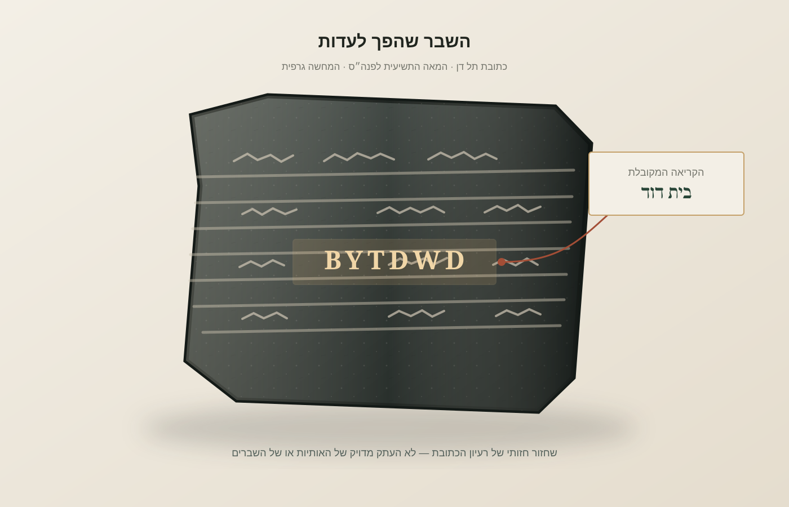
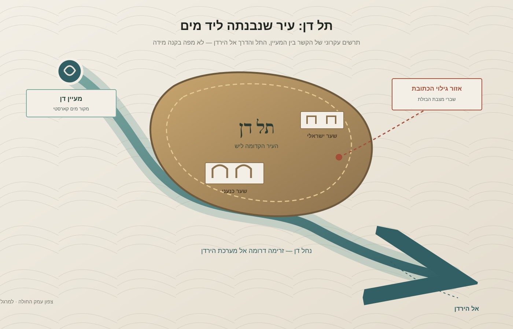

ארכאולוגיה · היסטוריה · לשון ומקרא
האבן שאמרה "בית דוד": מה תל דן באמת מספרת על העבר
בצפון הארץ, במקום שבו מעיין גדול יוצא מן הסלע ומתחיל את דרכו אל הירדן, נמצאו שרידים של עיר בת אלפי שנים ושל מצבת ניצחון שנשברה ושימשה חומר בנייה. כמה אותיות ארמיות על שבר בזלת שינו את הדיון על ראשית המלוכה בישראל — אך לא סיפקו את כל התשובות.
לפעמים הממצא הארכאולוגי החשוב ביותר אינו נמצא בתוך קבר מלכותי או בארמון מפואר. בתל דן, סמוך למעיין בצפון עמק החולה, התגלה שבר בזלת בתוך קיר עתיק. האבן לא עמדה עוד על כן ולא נשאה עוד את המסר שלשמו נחצבה. היא פורקה, הוסטה ממקומה ושולבה בבנייה מאוחרת. רק לאחר שנוקתה ונקראה מחדש התברר שהיא חלק מכתובת ניצחון ארמית מן המאה התשיעית לפני הספירה. בתוך רצף האותיות שלה הופיע הצירוף bytdwd — הקריאה המקובלת: "בית דוד".
הביטוי הזה הפך את תל דן לאחד האתרים המרכזיים בדיון על ההיסטוריה הקדומה של ישראל ויהודה. אבל כדי להבין מדוע, צריך להתרחק לרגע מן השאלה אם דוד המקראי היה דמות היסטורית, ולבחון את המקום עצמו: את המים שהביאו אליו אנשים, את השערים שבנו בו, את הממלכות שהתחרו עליו ואת הדרך שבה ארכאולוגים מחברים בין חפץ, שכבה וטקסט.

עיר שנולדה במקום שבו המים יוצאים מן ההר
תל דן אינו רק תל ארכאולוגי. הוא יושב ליד אחד ממקורות המים החשובים של מערכת הירדן. מי המעיין נובעים למרגלות החרמון, לאחר שמי משקעים מחלחלים בסלעי הגיר ונעים במערכת קארסטית — רשת טבעית של חללים וסדקים בסלע המסוגלת לאגור ולהוליך מים. מחקר הידרוכימי שעקב אחר מקורות הירדן העריך את ספיקת מעיין דן בכ־255 מיליון מטרים מעוקבים בשנה, עם תנודות עונתיות מתונות יחסית. רשות הטבע והגנים מתארת אותו כאחד ממקורות הירדן הגדולים והיציבים. המים הקרירים והזרימה המתמשכת יצרו סביבם סביבה חריגה בעושרה ביחס לאזורי ההר והעמק שמסביב.
למים יש כאן תפקיד היסטורי, לא רק נופי. מקור מים יציב מאפשר קיום של אוכלוסייה, חקלאות, בעלי חיים ומלאכות התלויות בכוח הזרימה. הוא גם יוצר נקודת מפגש בין דרכים: מי שמגיע מן החוף, מן הגליל, מן הבשן או מן העמקים שממזרח ומצפון יכול למצוא במקום משאב שאינו מובן מאליו. תל דן היה אפוא לא רק מקום שאפשר לחיות בו, אלא צומת שבו מים, מסחר, תנועה ופולחן יכלו להצטלב. מחקרי האתר מצביעים על קשרים עם מרחבים רחוקים: בממצאים נכללים חפצים מיקניים וקבר מן התקופה שבה התקיימו קשרים בין החוף המזרחי של הים התיכון לאזורי היבשה.

היישוב במקום משתרע על פני אלפי שנים, אך לא ברצף אחיד. השם הקדום של העיר היה ליש, והוא נזכר במקורות מצריים ומסופוטמיים, ככל הנראה כבר באלף השני לפני הספירה. במאה החמש־עשרה לפני הספירה נכללה ליש ברשימת ערים שנכבשו במסעותיו של תחותמס השלישי. הארכאולוגיה מראה עיר כנענית בעלת ביצורים ומבני ציבור, ולצדה עדויות לקשרים תרבותיים וכלכליים עם אזורים רחוקים. זהו אחד ההיבטים המעניינים של האתר: עיר שנראית כיום מרוחקת מן המרכזים הגדולים הייתה בעבר חלק מרשת אזורית רחבה.
השער הכנעני: הנדסה שנשמרה מתחת לאדמה
אחד השרידים המרשימים בתל דן הוא שער כנעני מן הברונזה התיכונה, המתוארך בקירוב לאמצע המאה השמונה־עשרה לפני הספירה. הוא נבנה מלבני בוץ, על יסודות אבן, וכלל שלוש קשתות. חלקים גדולים ממנו השתמרו לגובה של כשבעה מטרים — ממצא יוצא דופן בעולם שבו לבני בוץ נוטות להתפורר במהירות לאחר חשיפה לגשם, רוח ושינויי טמפרטורה. השער התגלה בחפירותיו של אברהם בירן, ותואר כבר ב־1981 במאמרו בכתב העת *The Biblical Archaeologist*.
הקשת אינה רק פרט אסתטי. היא מאפשרת להעביר עומס מעל פתח באמצעות חלוקת הכוחות לצדדים, במקום להישען על קורה אופקית אחת. בבנייה מלבני בוץ נדרשת מיומנות מיוחדת, משום שהחומר אינו מתנהג כמו אבן גזית. השער מלמד על ידע הנדסי, על יכולת ארגונית ועל השקעה ציבורית: עיר שהקימה שער מונומנטלי כזה הייתה צריכה לתכנן, לייצר לבנים, להוביל חומר ולרכז כוח עבודה. הוא גם מזכיר שחדשנות טכנולוגית אינה חייבת להופיע כמכונה מורכבת; לפעמים היא טמונה בדרך שבה קהילה מארגנת חומר מקומי כדי לפתור בעיה מבנית.
העובדה שהשער שרד אינה מובנת מאליה. לאחר חשיפת לבני הבוץ לאוויר, תנאי השימור נעשו קשים יותר. רשות הטבע והגנים ביצעה פעולות הגנה ושימור כדי למנוע את התפוררותו. כאן נפגשות הארכאולוגיה והנדסת השימור: חשיפת ממצא אינה סוף העבודה אלא תחילתה של אחריות חדשה. מה שנשמר מתחת לאדמה במשך אלפי שנים עלול להיהרס בתוך שנים ספורות אם לא מתאימים לו תנאי הגנה.
השבר בקיר והכתובת שמחוץ למקרא
חפירותיו של אברהם בירן בתל דן החלו ב־1966 ונמשכו 33 עונות חפירה. ביולי 1993 התגלה שבר ראשון של מצבת בזלת הנושאת כתובת בארמית. ביוני 1994 נמצאו שני שברים נוספים. בפרסום המדעי של בירן ויוסף נוה משנת 1995 מתואר כיצד נמצאו השברים בתוך מפלסי עפר ובסמוך לקיר, לאחר שהמצבה המקורית פורקה ושימשה בשימוש משני. במילים אחרות, הארכאולוגים לא מצאו את האנדרטה כפי שהוצבה לראשונה, אלא את שרידיה לאחר שמישהו כבר שינה את תפקידה.
הכתובת היא חלק ממצבת ניצחון של מלך ארמי, כנראה חזאל מלך דמשק, שפעל במחצית השנייה של המאה התשיעית לפני הספירה. שמו של חזאל אינו נשמר בקטע ששרד, ולכן הזיהוי מבוסס על ההקשר ההיסטורי והלשוני ולא על חתימה מפורשת. המלך מתאר את ניצחונותיו על מלכי ישראל ויהודה, ובתוך הטקסט מופיע הצירוף bytdwd. רוב החוקרים קוראים אותו "בית דוד" — שם של שושלת או ממלכה המזוהה עם מייסד בשם דוד.
הקריאה לא התקבלה בלי ויכוח. כבר ב־1994 הציע החוקר אהוד בן־צבי להיזהר: רצף האותיות עשוי, מבחינה לשונית, לאפשר גם פירושים אחרים. בהמשך, שני השברים שהתגלו ב־1994 סיפקו הקשר נוסף לטקסט, וחוקרים רבים ראו בהם חיזוק לקריאת "בית דוד". כיום זו הקריאה המקובלת על רוב החוקרים, אך חשוב לזכור מה בדיוק עומד לפנינו: כמה אותיות על שבר אבן, לא תעודת זהות של דוד ולא תיאור של ממלכתו.
כתובת תל דן אינה מספרת לנו את כל סיפור דוד. היא מספרת דבר מצומצם יותר — אך חשוב מאוד: במאה התשיעית לפני הספירה היה מוכר באזור שם פוליטי או שושלתי שנקשר לבית דוד.
מלכים כותבים היסטוריה — וגם תעמולה
כדי להבין את משמעות הביטוי "בית דוד", כדאי להשוות אותו לאופן שבו ממלכות אחרות נקראו על שם שושלות. במקורות האשוריים מופיע הכינוי Bit-Humri — "בית עמרי" — כשם לממלכת ישראל. מאגר ORACC של אוניברסיטת פנסילבניה, המרכז כתובות אשוריות, מציג כיצד מלכי אשור זיהו את ישראל באמצעות עמרי, אחד ממלכיה הבולטים. זהו רמז לכך ש"בית דוד" אינו חייב להיות שם של ארמון או מבנה, אלא דרך מקובלת לתאר ממלכה דרך שושלת שייסדה או סימלה אותה.
גם מצבת מישע, שנמצאה בדיבון שבמואב ונשמרת כיום בלובר, מציגה את ההיסטוריה מנקודת מבטו של מלך מנצח. מישע מתאר כיצד השיב למואב שטחים שהיו בשליטת ישראל ומייחס את הצלחותיו לאל כמוש. כמו כתובת תל דן, גם היא מצבת בזלת מן המאה התשיעית לפני הספירה, וגם היא אינה כרוניקה ניטרלית. היא נועדה להנציח ניצחון, להצדיק שלטון ולתת למלחמה משמעות דתית ופוליטית.
הדבר חשוב במיוחד משום שהכתובת מתל דן והמקרא אינם מספרים בדיוק אותו סיפור. לפי ספר מלכים, יהוא הוא שהרג את יורם מלך ישראל ואת אחזיהו מלך יהודה. בכתובת הארמית המלך מתפאר שהוא עצמו הרג את שני המלכים. אפשר להציע שיהוא פעל בשיתוף עם חזאל, או שהמלך הארמי ייחס לעצמו את הצלחתו של בעל ברית; החוקר ויליאם שניידווינד הציע קשר כזה בעקבות השברים החדשים. אבל אין בידינו ראיה שמכריעה את השאלה. ייתכן גם שהכתובת משתמשת בלשון ניצחון שמרחיבה את חלקו של המלך במאורעות. כך או כך, שתי העדויות אינן חלונות שקופים אל העבר: כל אחת נכתבה מתוך עולם פוליטי ותכלית משלה.
מכאן עולה קשר עמוק בין אפיגרפיה — חקר כתובות עתיקות — לבין ביקורת מקורות. היסטוריון אינו בוחר פשוט בין "הכתובת" ל"מקרא". הוא שואל מי כתב, למי, באיזה הקשר, מה שרד, מה שוחזר ומה הייתה התועלת הפוליטית של כל גרסה. העובדה ששני מקורות חלוקים אינה בהכרח מבטלת את שניהם; לעיתים דווקא הסתירה ביניהם חושפת את האינטרסים ואת נקודות המבט של הכותבים.
גם המקדש שבתל דן אינו סיפור סגור
תל דן מזוהה גם עם מרכז פולחני חשוב של ממלכת ישראל הצפונית. בספר מלכים מסופר על ירבעם בן נבט שהציב עגלי זהב בבית אל ובדן, כדי ליצור מוקדי פולחן חלופיים לירושלים. בחפירות נחשף מתחם פולחני גדול, ובמשך שנים יוחסו חלקים ממנו למקדש של ירבעם ולשלבים מאוחרים של ממלכת ישראל. אבל כאן הארכאולוגיה מלמדת עד כמה מסוכן לזהות ממצא עם פסוק באופן מהיר מדי.
החוקר ערן אריה פרסם ב־2008 מחקר שבחן מחדש את שכבות תקופת הברזל בתל דן והציע שחלק מן הממצאים שיוחסו לתקופה מוקדמת צריכים להיות מתוארכים מחדש; לפי הצעתו, בתקופה מסוימת העיר הייתה נטושה או יישוב קטן. ב־2025 פרסמה לבנה צפניה־זיאס מחקר נוסף על המתחם המקודש, וטענה שחלק מן המבנים שיוחסו בעבר לתקופת הברזל שייכים למעשה לתקופות הפרסית, ההלניסטית והרומית. אלה הצעות מחקריות שעדיין יש לבחון מול מכלול הממצאים, ולא פסק דין מוסכם. אך עצם הוויכוח חשוב: תיארוך של קיר, רצפה או כלי חרס עשוי לשנות את הסיפור ההיסטורי כולו.
זהו אחד ההבדלים בין ארכאולוגיה לבין חיפוש אחר אישור לסיפור מוכר. אם מתחילים מן הפסוק ומחפשים לו מבנה מתאים, קל מאוד להפוך כל במה למקדש של ירבעם וכל שער לשער של מלך מסוים. אם מתחילים מן השכבות, מן החומר ומן התיארוך, התמונה מורכבת יותר. לפעמים הממצא מחזק את הטקסט; לפעמים הוא מסבך אותו; ולפעמים הוא מלמד שהשאלה עצמה נוסחה מוקדם מדי.
מה האבן יכולה לומר — ומה לא
תל דן מחבר בין כמה תחומי ידע שנראים במבט ראשון רחוקים זה מזה. ההידרולוגיה מסבירה מדוע בני אדם התיישבו דווקא במקום הזה; ההנדסה מלמדת כיצד הם בנו שערים עמידים מחומר פשוט; האפיגרפיה מאפשרת לקרוא את השמות שבהם ממלכות הציגו את עצמן; וההיסטוריוגרפיה בוחנת כיצד כל שליט ביקש לעצב את זיכרון ניצחונותיו. אף אחד מן התחומים האלה אינו מספיק לבדו. רק החיבור ביניהם מאפשר לשחזר תמונה סבירה של עיר, ממלכה ומערכת יחסים אזורית.
כתובת תל דן אינה מוכיחה את כל מה שמסופר על דוד, ואינה קובעת מה היו גבולות ממלכתו או מה התרחש בירושלים בימיו. היא כן מספקת עדות חוץ־מקראית משמעותית לכך שבמאה התשיעית לפני הספירה היה מוכר באזור בית מלוכה שנקשר בשם דוד. זו אינה תשובה לכל השאלות על ראשית המלוכה, אבל היא משנה את סוג השאלות שאפשר לשאול: במקום להתווכח רק אם השם דוד היה קיים במסורת מאוחרת, אפשר לבחון כיצד זכרו אותו שכנים, כיצד השתמשו בשמו כדי לתאר ממלכה, ומה אפשר ללמוד מן הפער בין זיכרון מקומי, תעמולה מלכותית וסיפור מקראי.
העיר העתיקה בתל דן נבנתה, נהרסה, שוקמה, שינתה את שמה ואת תפקידה, ובסוף הפכה לחומר גלם בקירות של תקופה אחרת. גם הכתובת עברה את אותו מסלול: ממסר מלכותי לאבן שבורה, מחומר בנייה לממצא ארכאולוגי, ומממצא מקומי לדיון בינלאומי. ההיסטוריה אינה נשמרת תמיד במקום שבו נכתבה. לפעמים היא שורדת דווקא מפני שמישהו שכח מה הייתה האבן לפני שהשתמש בה מחדש.
חמישה דברים שכדאי לזכור
- תל דן הוא אתר יישוב רב־תקופתי ליד אחד ממקורות המים החשובים של הירדן; שמו הקדום היה ליש.
- השער הכנעני מן הברונזה התיכונה הוא מבנה לבני בוץ בעל שלוש קשתות, שהשתמר לגובה יוצא דופן.
- כתובת תל דן היא מצבת ניצחון ארמית מן המאה התשיעית לפנה"ס, שנמצאה בשלושה שברים בשימוש משני.
- הקריאה המקובלת של bytdwd היא "בית דוד", אך היא מעידה על שושלת מוכרת — לא על כל פרטי הסיפור המקראי.
- גם תיארוך המתחם הפולחני ושחזור האירועים המדיניים נותרים נושאים למחקר ולוויכוח.
שלוש שאלות למחשבה
- כאשר כתובת מלכותית ומקור דתי מספרים על אותו אירוע באופן שונה, אילו כלים מאפשרים להיסטוריון להעריך כל עדות?
- האם אזכור של שושלת במקור זר מלמד יותר על מייסדה, או דווקא על האופן שבו שכניו תפסו את הממלכה?
- מתי ממצא ארכאולוגי באמת מאשר סיפור עתיק, ומתי הוא רק מאפשר לנסח את השאלה מחדש?
לקריאה נוספת
- בית הספר לארכאולוגיה מקראית ע"ש נלסון גליק — תל דן: תולדות החפירות והממצאים המרכזיים.
- אברהם בירן ויוסף נוה, "The Tel Dan Inscription: A New Fragment" (1995): הפרסום הראשוני של שני השברים שנמצאו ב־1994.
- בירן ונוה, "An Aramaic Stele Fragment from Tel Dan" (1993): הפרסום המדעי הראשון של הכתובת.
- אהוד בן־צבי, "On the Reading BYTDWD" (1994): דיון מוקדם באפשרויות הקריאה של רצף האותיות.
- William M. Schniedewind, "Tel Dan Stela: New Light on Aramaic and Jehu's Revolt" (1996): הקשר ההיסטורי של הכתובת והאפשרות לשיתוף פעולה בין חזאל ליהוא.
- ORACC — Israel, the "House of Omri": כיצד המקורות האשוריים כינו את ממלכת ישראל.
- מוזיאון הלובר — מצבת מישע: מצבת ניצחון מואבית מן המאה התשיעית לפנה"ס.
- ערן אריה, "Reconsidering the Iron Age II Strata at Tel Dan" (2008): בחינה מחודשת של שכבות תקופת הברזל.
- Levana Tsfania-Zias, "The Sacred Precinct of Tel Dan Revisited" (2025): מחקר עדכני על תיארוך המתחם הפולחני.
- Gur, Bar-Matthews ו־Sass, "Hydrochemistry of the Main Jordan River Sources" (2003): מחקר על מאפייני המים של מעיין דן ומקורות הירדן.
הערך המקורי שנשלף: תל דן — ויקיפדיה העברית. הכתבה מרחיבה את הערך באמצעות פרסומים ארכאולוגיים, מקורות מוסדיים ומחקרים שפיטים.